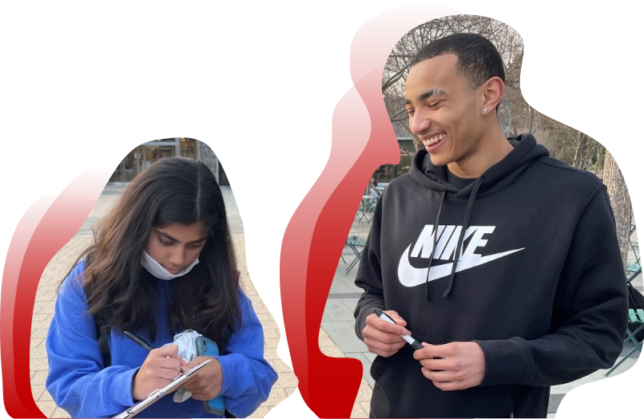

Young Voices,
Allied.

Our teams work at universities across North Carolina to mobilize students and build youth power. We get students out to vote and train youth advocates through our advocacy for University Election Day Holidays. We are building a major coalition of youth voters in North Carolina who are ready to demand change.
You make a difference with just a little of your time. Students can become advocates on their campus. People of all ages can join our newsletter to stay updated on our work and get information on how they can help. We are also always looking to partner with other impactful organizations.
We need financial support to execute our vision of greater youth involvement in politics. By contributing to us, you are supporting one of the most cost-effective voter mobilization programs to exist.